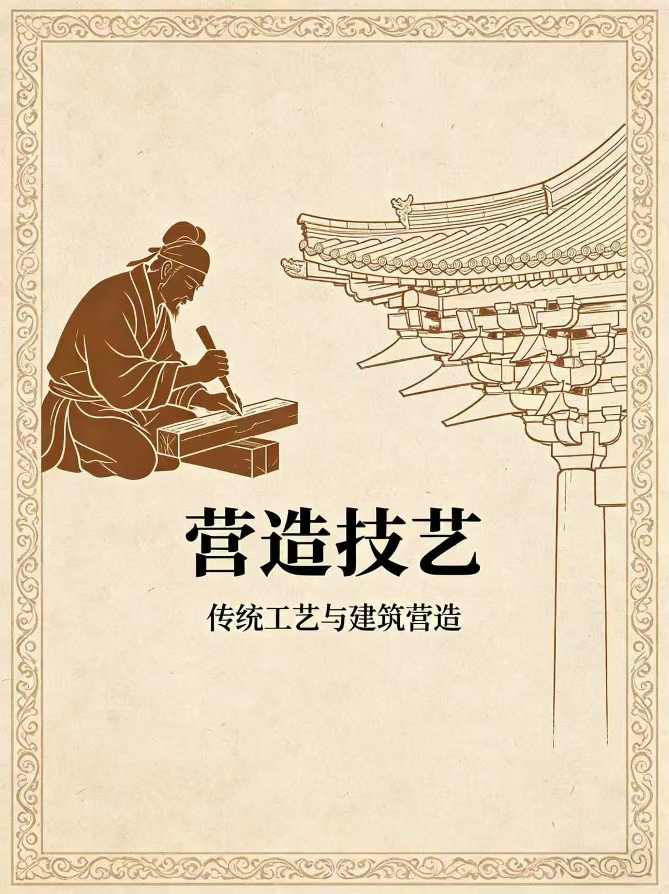

🏯 权力之巅
查看更多🏛️ 秩序之道
查看更多🏡 昔年归筑
查看更多🌉 山河跨越
查看更多📜 古建流年记
🏛️ 先秦 · 萌芽期
公元前2070木构架雏形出现，对称布局诞生
代表：殷墟宫殿、岐山凤雏村四合院
特点：木骨泥墙、茅茨土阶、中轴对称雏形
特点：木骨泥墙、茅茨土阶、中轴对称雏形
🏯 秦汉 · 形成期
公元前221斗拱成熟，楼阁兴起，屋顶制式规范化
代表：阿房宫、未央宫、汉代石阙
特点：抬梁式/穿斗式成熟，重檐屋顶出现
特点：抬梁式/穿斗式成熟，重檐屋顶出现
🪷 隋唐 · 鼎盛期
581–907气势宏伟，色彩绚丽，建筑体系完整成熟
代表：大明宫、佛光寺、大雁塔
特点：斗拱巨大、出檐深远、布局严整
特点：斗拱巨大、出檐深远、布局严整
🏮 宋辽金 · 精致期
960–1279风格清雅，结构精巧，装修细腻华丽
代表：晋祠、隆兴寺、应县木塔
特点：建筑纤巧、装饰华丽、《营造法式》成书
特点：建筑纤巧、装饰华丽、《营造法式》成书
🏯 明清 · 成熟期
1368–1912规格严谨，工料精细，样式标准化
代表：故宫、天坛、颐和园、四合院
特点：等级森严、斗拱缩小、琉璃瓦成熟
特点：等级森严、斗拱缩小、琉璃瓦成熟
📖 营造典籍

《营造技艺》
一本书读懂千年不钉一铆、百年不倒的中国古建智慧
从故宫斗拱到园林飞檐，解锁古人营造的秘密与美学
✅ 古建营造正宗原文
✅ 榫卯·斗拱·飞檐全解
✅ 非遗传承人口诀
✅ 零基础轻松读懂
📘 内容简介
《营造技艺》深度还原中国古代木构建筑精华，以宋代《营造法式》为核心，
收录榫卯、斗拱、飞檐、台基、彩画、屋顶等完整营造体系，
搭配原文与白话讲解，让普通人也能读懂古建灵魂。
全书兼具专业性、文化性与观赏性，是了解中国古建筑的必读经典。
🏯 核心内容
✔ 木作技艺：榫卯结构、斗拱体系、梁柱构架全图解
✔ 屋顶形制：庑殿、歇山、悬山、硬山、攒尖顶等级解析
✔ 装饰美学：飞檐、彩画、门窗、雕刻的文化寓意
✔ 古建实例：故宫、寺庙、园林、民居营造原理详解
🏅 权威推荐
故宫古建保护专家、非遗传承人、中国古建筑学会联合推荐，
被誉为“现代版营造法式”、“东方古建入门必读”。
🏮 古建核心知识 · 一键了解
榫卯
斗拱
飞檐
彩画
点击上方标签，快速了解古建核心知识
❓ 知识问答
PUZZLE · 国风解谜
得分: 0 / 5
🏮 古建守护
一砖一瓦藏岁月，一印一诺护文明
📜 守护资格考验
下列哪一项是保护古建筑的正确行为？
🖐️
请先完成考验，解锁守护印记
🏅
🏯 古建华容道
PUZZLE · 国风解谜
📜 游戏说明
1. 目标：按 草木→夯土→陶瓦→木构→青砖→琉璃→斗拱→砖石→空格 顺序归位2. 操作：点击与空格相邻的方块移动
3. 胜利：空格在右下角即为通关
步数：0
时间：00:00
🖌️ 古建填色
🎨 古建筑填色
选中颜色后，在画布上为建筑部件上色


📖 精彩留言
暂无留言，快来抢沙发！